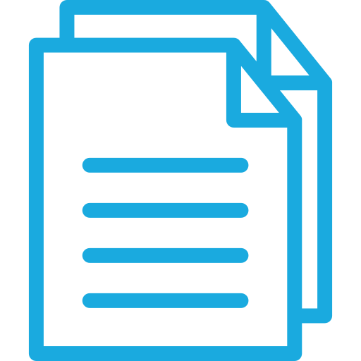

Documentação Necessária
Para garantir o direito de permanência de imigrantes no Brasil, é necessário apresentar e regularizar alguns documentos. Abaixo está um resumo dos principais documentos e etapas para obtê-los:
Protocolo de Solicitação de Refúgio:
• Solicite na Polícia Federal ou órgão responsável, fornecendo documentos como passaporte.
• Receba um documento que garante residência provisória, renovável anualmente.
Carteira de Trabalho e Previdência Social (CTPS):
• Solicite após estar regularizado com CPF e documentos de residência válidos.
• Permite vínculo empregatício formal e acesso à previdência social.
Cadastro de Pessoa Física (CPF):
• Solicite na Receita Federal com documentos pessoais (passaporte, protocolo de refúgio ou visto).
• Necessário para acessar serviços públicos e privados.
Carteira de Registro Nacional Migratório:
• Emitida após a obtenção de visto temporário ou autorização de residência.
• Funciona como documento de identidade para imigrantes.
Cart√£o SUS:
• Solicite em unidades de saúde ou online com protocolo de refúgio ou documento equivalente.
• Garantirá acesso gratuito a serviços de saúde pública.
Documentos de Educação e Trabalho:
• Apresente diplomas e certificados de qualificação, traduzidos se necessário.
• Esses documentos podem ser exigidos para certos tipos de visto ou autorização de residência.
Legislação de Imigração
Residência Permanente no Brasil: Se você deseja morar ou trabalhar no Brasil, pode solicitar uma autorização de residência. Isso é feito através de um formulário online, seguido pela apresentação da documentação necessária em um posto da Polícia Federal. Você também precisará pagar algumas taxas: R$ 168,13 para o processamento do pedido e R$ 204,77 para a emissão da Carteira de Registro Nacional Migratório (CRNM). O agendamento para ser atendido na Polícia Federal é feito online e, após a aprovação, você poderá acompanhar o status do seu pedido pela internet. O tempo médio para emissão da CRNM é de 30 dias úteis.
Cidadania Brasileira: Estrangeiros e refugiados podem se tornar cidadãos brasileiros por meio da naturalização. Este processo geralmente leva cerca de 180 dias e há quatro tipos principais de naturalização: ordinária, extraordinária, especial e provisória. A naturalização ordinária é para estrangeiros que moram no Brasil há pelo menos quatro anos. É necessário falar português, não ter antecedentes criminais e mostrar capacidade civil. Esse tempo pode ser reduzido para um ano se você for casado com um brasileiro ou tiver filhos brasileiros, ou para dois anos se você contribuir significativamente para o país. A naturalização extraordinária é para aqueles que moram no Brasil há pelo menos 15 anos sem interrupções, sem necessidade de falar português. A naturalização especial é para estrangeiros casados há mais de cinco anos com membros do Serviço Exterior Brasileiro ou que serviram por mais de dez anos em missões diplomáticas brasileiras. A naturalização provisória é para crianças ou adolescentes que chegaram ao Brasil antes dos 10 anos. Esta se torna definitiva quando atingem a maioridade.
Leis Recentes de Imigração no Brasil: Nos últimos anos, o Brasil atualizou suas leis de imigração para melhor atender às novas realidades sociais e internacionais. A Lei nº 9.474/1997 implementa o Estatuto dos Refugiados de 1951 no Brasil. A Lei nº 13.344/2016 trata da prevenção e combate ao tráfico de pessoas. A Lei nº 13.445/2017, conhecida como Lei de Migração, regula a entrada, permanência e saída de estrangeiros, substituindo o antigo Estatuto do Estrangeiro. A Lei nº 13.684/2018 estabelece medidas de assistência emergencial para pessoas em situação de vulnerabilidade devido a crises humanitárias. A Lei nº 13.979/2020 introduz medidas para enfrentar a pandemia de COVID-19, incluindo a regulação da entrada e quarentena de estrangeiros.Essas leis refletem a necessidade de adaptar as políticas migratórias do Brasil às novas realidades e garantem que estrangeiros possam viver e contribuir para o desenvolvimento do país de maneira legal e segura.
Documentos Enganosos
Existem diversos tipos de documentos falsos utilizados por imigrantes, como passaportes, vistos, carteiras de identidade e certidões de nascimento. Os impactos incluem a facilitação da imigração ilegal, entrada fraudulenta em países, tráfico de pessoas e drogas, além de dificultar a identificação e registro dos indivíduos.
As causas para o uso de documentos falsos incluem a falta de oportunidades nos países de origem, a busca por melhores condições de vida, e a pressão em situações de tráfico humano. Processos burocráticos longos e complexos também incentivam o uso de documentos falsos para acelerar a entrada e permanência em um país. Além disso, a demanda por trabalho barato leva empregadores a contratar imigrantes com documentos falsos, enquanto redes de contrabandistas e fraudadores fornecem esses documentos mediante pagamento.
Para combater a utilização de documentos falsos pelos imigrantes, é necessário investir em políticas de imigração mais justas e humanas, fortalecer os mecanismos de identificação e verificação de documentos, promover a conscientização e a educação sobre a importância da regularização migratória, e o respeito às leis de cada país. Medidas de cooperação internacional também são essenciais para combater o tráfico de pessoas e a falsificação de documentos. são estratégias que podem ajudar a combater os documentos enganosos e garantir a segurança e legalidade nos processos migratórios.
Tendencias Futuras
A Constituição República Federativa do Brasil garante que: “Todos são iguais perante a lei, sem distinção de qualquer natureza, garantindo-se aos brasileiros e aos estrangeiros residentes no País a inviolabilidade do direito à vida, à liberdade, à igualdade, à segurança e à propriedade...”.
Ao chegar no país, o imigrante deve se dirigir a Unidade da Polícia Federal e identificar-se. Lá será feita a solicitação de documentos de identificação como o CPF por exemplo, entretanto, caso o imigrante não possua, ele precisará emitir uma Carteira de Registro Nacional Migratório (CRNM), que servirá como um identificador no país.
Esse documento pode diferir cerca de 90 dias para ficar pronto, logo o imigrante fará uso de um protocolo com número de RNM, que poderá ser usado para qualquer fim de identificação.
A CRNM pode ter validade determinada (até 2 anos) ou indeterminada (com renovação a cada 9 anos). Tal renovação deve ser feita 90 dias antes do vencimento.
Caso o imigrante permaneça no país sem obter a devida autorização e sem o visto renovado, correrá o risco de pagar multa que pode chegar até R$ 10.000 em 100 dias.